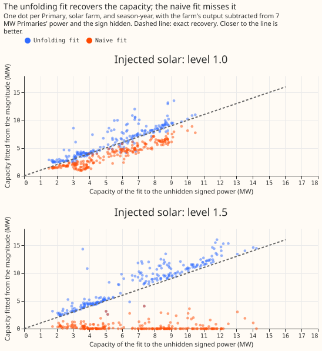
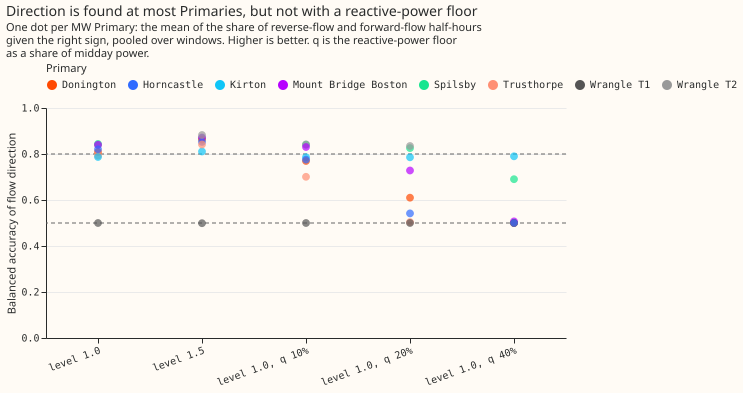
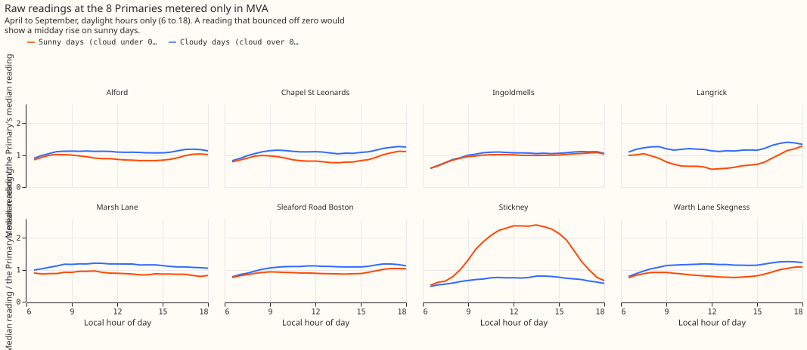

Experiment 79: can the direction of flow be recovered at Primaries metered only in MVA?
Hiding the sign of a Primary's power and recovering it works for the solar capacity, and finds the
direction of flow with a balanced accuracy of 0.78 (0.5 is a guess), but the 8 Primaries metered
only in MVA show almost no reverse flow to recover, and the one that might (Stickney) cannot be
checked. A Primary is a substation that steps 33 kV down to 11 kV. At 7 of the 8 Primaries metered
only in megavolt-amperes (MVA), the MVA reading can stand in for megawatts (MW) from April to
September, so no fit is needed there. Stickney is the exception, and the next step is a few weeks of
signed power from NGED for Stickney. The verdict is partly supported: the capacity part passed the
pre-registered rule and the direction part did not.
We asked whether the direction of the power flowing through a Primary, and the capacity of the solar panels behind it, can be found from a meter that records only the size of the flow, not its direction. First we tested the method where the answer is known. We took the 8 Primaries whose meters record signed power in MW. We subtracted the recorded output of a real solar farm, scaled to the Primary's typical midday power (level 1.0) or to 1.5 times that (level 1.5), so that the flow reversed on sunny middays. Then we threw the sign away and asked the fit to recover the capacity and the direction. Last, we ran the same fit on the real readings of the 8 other Primaries, which are metered only in MVA. The median error of the fitted capacity was 0.09 to 0.11 of the capacity found by fitting the unhidden signed power. A fit that treated the magnitude as if it were signed (the naive fit) had median errors of 0.29 to 1.00. The fit gave the right direction of flow with a balanced accuracy of 0.78 to 0.81 (the mean of the share of reverse-flow half-hours and the share of forward-flow half-hours labelled correctly), or 0.82 to 0.86 after leaving out one Primary where reverse flow is the usual state. The balanced accuracy fell to 0.67 when the reading also held reactive power equal to 20% of midday power, which the fit does not know about. At 7 of the 8 real Primaries metered only in MVA, the fit found no reverse flow.
Result
Capacity is identified, and direction is not, by the rule fixed before the run. In this rule, capacity needed a median relative error of at most 0.25 and an upper interval end below zero for the difference from the naive fit (contrast C1). Direction needed a balanced accuracy of at least 0.80 and a lower interval end of at least 0.25 above the all-positive guess of 0.5 (contrast C2). A window is one Primary in one April-to-September season, and the years run from September to August as in experiment 00073. Intervals are 99% from a bootstrap that resamples Primaries and then windows. The unfolding fit is the method under test: it alternates between choosing a sign for each half-hour and fitting the signed model to the signed series.
| Injected solar | Capacity error, unfolding fit | Capacity error, naive fit | C1: unfolding minus naive | Balanced accuracy | C2: accuracy minus 0.5 |
|---|---|---|---|---|---|
| Level 1.0 (227 windows) | 0.092 | 0.290 | -0.198 (-0.409 to -0.068) | 0.779 | +0.279 (+0.157 to +0.337) |
| Level 1.5 (227 windows) | 0.113 | 1.000 | -0.887 (-0.920 to -0.754) | 0.811 | +0.311 (+0.184 to +0.372) |
Median relative capacity error against the signed fit, and balanced accuracy of the fitted flow direction, 8 MW Primaries and 6 farms. Four windows at level 1.0 and one at level 1.5 had too few reverse-flow half-hours to score for sign.

Against the capacity of the injected farm alone, the median error is 0.151 at level 1.0 and 0.073 at level 1.5, where against the signed fit it is 0.092 and 0.113, so the signed fit's own error is part of every figure in the table. Level 0.5 has little reverse flow at 7 of the 8 Primaries and is a no-signal check. The median relative capacity error is 0.004 for the unfolding fit and 0.001 for the naive fit, and the median fitted negative share is 0 (single windows reach 0.21). On the 30 windows of the 5 Primaries that almost never go negative, with no injection, the median fitted negative share is 0.0000, so the fit does not invent reverse flow. The no-injection check passes trivially for a fit that never finds reverse flow.
A reactive-power floor the fit cannot see lowers both parts quickly. The reading was
sqrt(power² + q²) with q equal to 10%, 20%, or 40% of midday power (level 1.0). The unfolding
fit's capacity error is 0.130, 0.309, and 0.529 against the naive fit's 0.331, 0.404, and 0.539, and
its balanced accuracy is 0.756, 0.666, and 0.561. At 20%, three Primaries (Horncastle, Trusthorpe,
and Donington) fall to a recall of reverse flow of 0.01 to 0.23. The reactive-power result is
descriptive and did not change the verdict. A power factor of 1 is therefore a strong assumption for
the direction, and
nothing in this experiment measures the real reactive power at any Primary.

Post hoc: Wrangle T1 and Stickney
One MW Primary, Wrangle T1, drags the direction score below its limit, and the same weakness may hide Stickney. Wrangle T1 is net generation on 59% to 94% of April-to-September daylight half-hours in its two seasons. With level 1.0 injected, the fit returns capacity 0 and no negative flow there, against a signed capacity of 1.73 MW, so its balanced accuracy is 0.5. Without it, the balanced accuracy is 0.819 (0.791 to 0.843) at level 1.0 and 0.856 (0.831 to 0.874) at level 1.5, with 0.69 and 0.77 of reverse-flow half-hours found and 0.95 and 0.94 of forward-flow half-hours kept. The split between Wrangle T1 and the other Primaries was chosen after seeing the result and does not change the verdict.

Stickney's reading rises on sunny middays, which is what reverse flow would look like, and the registered fit does not find reverse flow there. Stickney's median midday reading is about 2.4 times its typical reading on sunny days and about 0.8 times on cloudy days (figure 1). Ingoldmells is flat, and the other six MVA-only Primaries fall on sunny days by 1% to 38% of their typical reading. Experiment 00039 found a negative capacity at Stickney in every year. With extra starting sign patterns that flip every half-hour above a solar-output threshold (a post hoc change, not tried on the known answers) the fit reaches a capacity of 1.3 to 7.2 MW with a negative flow in 75% to 87% of daylight half-hours from 2021, and lowers the loss by 9% to 18% in 4 of 5 windows. Because the same fit fails at Wrangle T1, where the answer is known, the Stickney capacity from the post hoc starts is not evidence.
The real series
At 7 of the 8 MVA-only Primaries the fit finds no reverse flow, and its capacity equals the naive fit's (figure 4). The median fitted negative share is 0.0% at all of them except Stickney, where the registered fit gives 0.7% and a capacity of 0. The fitted capacities are 6.0 MW at Warth Lane Skegness, 2.5 at Sleaford Road Boston, 1.4 at Langrick, 1.1 at Alford, Chapel St Leonards, and Marsh Lane, and 0.7 at Ingoldmells. These capacities come from a fit that cannot be checked against signed power, and a load that tracks sunshine would give the same numbers. The 95th percentile of the negative share over resampled weeks is 0.095 at Ingoldmells, 0.054 at Stickney, and under 0.001 at the others. The 5th to 95th percentile of the fitted capacity runs from 0 to 3.4 MW at Ingoldmells and from 0 to 2.4 MW at Marsh Lane. The lowest midday readings are 0.017 MW at Stickney, 0.026 MW at Marsh Lane, and 0.099 MW at Langrick; the other five stay above 0.87 MW.

Failures and caveats
- All 6 solar farms (A to F) are used for the injection, because the fit has no tuning parameter that could be chosen to favour a farm. The 8 MW Primaries are 8 independent clusters in the bootstrap, so every conclusion about direction rests on 8 Primaries, one of them an outlier.
- The capacity truth is the signed fit, so a capacity error here measures the unfolding step and not the real solar capacity. Real capacity at the MVA-only Primaries has no truth.
- Natural reverse flow, with no injection, gave only 5 eligible windows (Spilsby in three season-years and Wrangle T1 in two), so known answer (4) of the plan says little. Spilsby's recall of reverse flow is 0.35.
- The unfolding fit's starting sign patterns are sized from the magnitude reading alone, and not from the scale that sizes the injection, so the fit never begins at the answer.
- The fit's capacity at the MVA-only Primaries uses the fleet shape (0.2 east, 0.6 south, 0.2 west at a DC:AC ratio of 1.15) and the nuisance terms of experiment 00073. The capacity is not corrected for the 0.77 recovery that experiment 00039 found.
Lessons for later experiments
The sign can be recovered where reverse flow is sometimes present, and the capacity follows, but the fit has no validated answer for a Primary that exports power on most sunny days. Wrangle T1 is the known answer where the fit fails, and Stickney is the real Primary that looks like Wrangle T1. The registered starts and the post hoc starts both need a known answer in that regime before any Stickney value is quoted.
What the next experiment should answer
Does a starting pattern that flips every daylight half-hour of the clearest days recover the capacity and direction at Wrangle T1, and, if so, does the pattern give a consistent answer at Stickney? The threshold-flip starts of the post hoc section already return capacity 0 at Wrangle T1 in both seasons. The test should use injection at levels where reverse flow is the usual state (level 2.0 and above), keep the 50-row sign rule, and add the post hoc starts to the self-tests. The test should also check that the other seven MVA-only Primaries, which show no reverse flow, still return the naive fit. Signed power from NGED for Stickney on even a few days would settle the question without a fit.
The plan as registered
Question. Eight of the 16 trial-area Primaries have a meter that records only the magnitude of apparent power (MVA). When embedded solar pushes net flow through zero, that reading bounces off zero and shows no direction. NGED cannot supply real and reactive power at these 8, so the only route to MW is the model. The fit assumes a power factor of 1.
Method. Each window's model is as in experiment 00073: power equals a calendar cell
(month, half-hour, day type) plus heating degree-days and cloud terms, minus a capacity c >= 0
times a solar shape (the fleet orientation mix of 0.2 east, 0.6 south, and 0.2 west at 25° tilt,
clipped at a DC:AC ratio of 1.15). The unfolding fit sees only |power|. It starts from a set of
sign patterns (all positive, and the patterns implied by capacities of 0.5, 1, 1.5, and 2 times the
window's median absolute midday power), alternates between fitting the model to sign x |power| and
resetting each sign to the sign of the fitted value, and keeps the start with the lowest squared
error. The naive fit is the first pass of the all-positive start.
Known answers. (1) Injected: the output of each metered solar farm (A to F, normalised to a 99th
percentile of 1) is scaled and subtracted from each of the 8 MW Primaries' power, at levels 0.5,
1.0,
and 1.5 times the window's median absolute midday power, then the sign is hidden. The truth is the
signed
fit to the same series. (2) Reactive floor: the same at level 1.0, with sqrt(power^2 + q^2) taken
as the reading, where q is 0.1, 0.2, or 0.4 times the window's median absolute midday power,
unknown
to the fit. Only 0.2 enters a contrast (C3). (3) No injection: the sign of the five MW Primaries
that
almost never go negative is hidden, and the share of half-hours where the fitted flow is negative
counts
false reverse flow. (4) Natural reverse flow: Wrangle T1 and T2 and Spilsby go negative in the
real data; the sign is hidden and recovered with no injection, where a window has at least 20
reverse-flow half-hours.
Self-tests. On a synthetic series with a known capacity and no noise, the fit recovers it to 1%. On series with capacity 0 and a small capacity that never nears zero, the unfolding fit returns an all-positive sign pattern. A start that flips the signs wins only if it lowers the loss by more than 0.5% of the all-positive start's loss. The run records, per window, the number of distinct capacities the starts reach and the loss gap between the best and second-best start. Before any fit runs, a script tabulates the reverse-flow rows per window and level, and the midday minimum of the magnitude at each MVA-only Primary, to show whether level 1.0 resembles the real series.
Size. Medium. What gets stored: private tables only. Serving path: untouched. Degradation rule: untouched. More than one defensible design: yes (alternating signs, a grid over capacity, or a mixture fit), so the plan is reviewed once. Callers: the experiment copies experiment 00073's fitting code, and nothing imports it.
Earlier advice followed. Experiments 00039 and 00056: leave the MVA Primaries out of a signed capacity estimate (here they are fitted with the unfolding fit and reported apart), and report the share of near-zero half-hours. Experiment 00039: injection into a linear fit tests the shape only; the magnitude link is non-linear, so injection tests the fit here. Experiment 00045: use the season-year constant capacity, which this experiment does. No earlier advice item is departed from.